Basic Table Joins and Calculations in QGIS
Overview
This lab focuses on a two-layer join and calculation workflow.
You will compare California county median household income for 2000 and 2020, join the two county layers through a shared identifier, calculate both absolute and percent change, and then symbolize the result as a choropleth map.
Data
Download the lab data from:
After downloading:
- Unzip
TableBasics.zip - Keep the shapefiles and their related files together in the same folder
- Add the layers from the unzipped folder into QGIS
This lab uses two county polygon layers:
ca_county_2000_mhhincca_county_2020_mhhinc
Each layer contains California counties and one median household income field:
Both layers also contain shared identifier fields including:
spatial_idname
Part 1: Add the Layers and Inspect the Fields
- Open QGIS and start a new project.
- Use the Browser panel to locate the lab data folder.
- Add both layers to the project:
ca_county_2000_mhhinc.shpca_county_2020_mhhinc.shp
- Make sure both layers appear in the Layers panel.
- Turn both layers on so you can confirm they cover the same set of California counties.
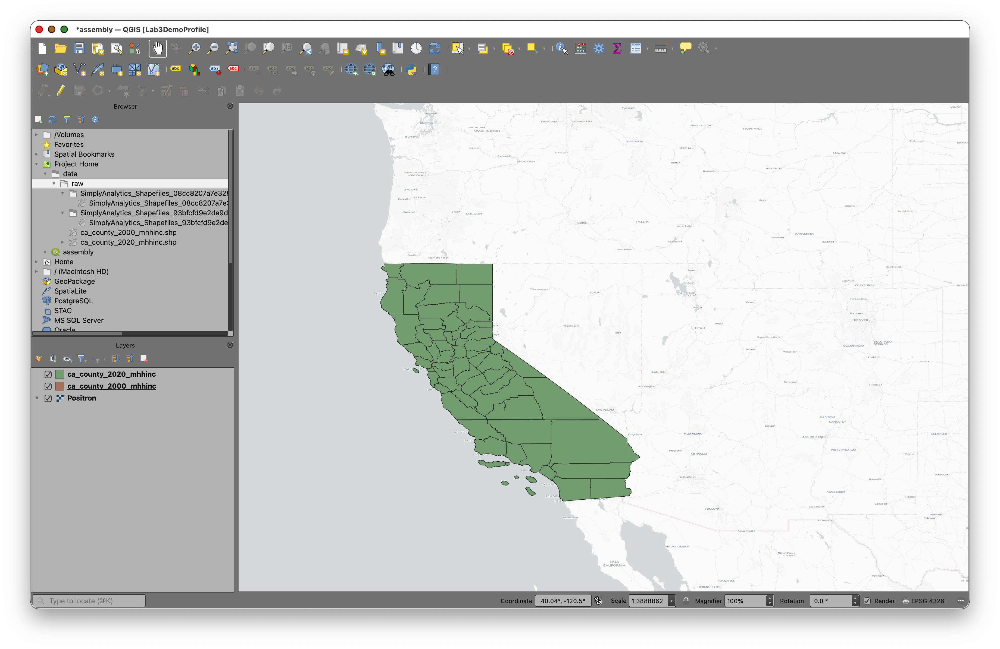
Inspect the 2000 layer fields
- Right-click
ca_county_2000_mhhinc. - Choose Properties.
- Click the Fields tab.
You should see fields including spatial_id, name, and MHHINC2000.
Notice that:
spatial_idis stored as Text (string)nameis stored as Text (string)MHHINC2000is stored as Decimal (double)
This tells you that the income field is numeric, which means it can be used in calculations.
Inspect the 2020 layer fields
- Close the first properties window.
- Right-click
ca_county_2020_mhhinc. - Choose Properties.
- Click the Fields tab.
You should see a similar structure, but with MHHINC2020 instead of MHHINC2000.
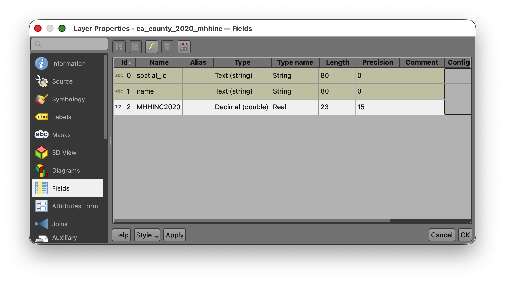
Pause here and compare the two tables:
- Both have
spatial_id - Both have
name - Each has one year-specific income field
That is exactly what makes a join possible.
Part 2: Explore the Attribute Tables
- Open the Attribute Table for
ca_county_2020_mhhinc. - Scroll through the rows and columns.
- Find the
MHHINC2020field. - Note that the values vary substantially across counties.
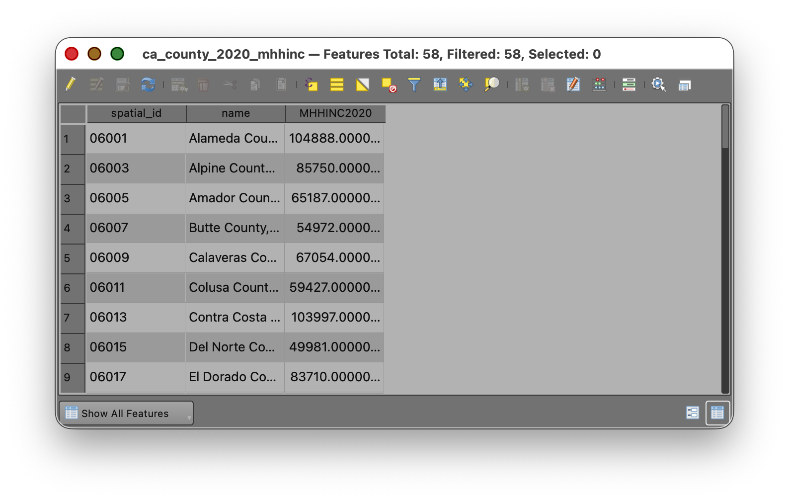
For this dataset:
MHHINC2020ranges from41780to130890
Now repeat the same process for ca_county_2000_mhhinc.
For that dataset:
MHHINC2000ranges from27522to74335
Why this matters
Before doing a join or a calculation, it is worth simply looking at the tables.
This helps you answer questions like:
- What are the field names?
- Which fields are numeric?
- Do the likely join fields match?
- What is the rough range of the values?
These are small checks, but they prevent many common GIS mistakes.
Part 3: Run Basic Statistics for Fields
Before making the join, use one of QGIS' summary tools to confirm the distribution of values in each year.
- Open the Processing Toolbox.
- Search for Basic statistics for fields.
- Run the tool for
ca_county_2020_mhhincusing the fieldMHHINC2020as the Field to calculate statistics on. - Review the output in the Results Viewer.
- Use the
[Create temporary layer}option to create an output that will not persist after you close the project.
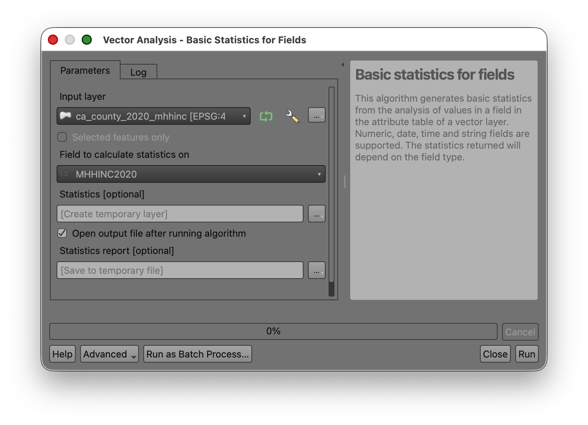
You should get values close to the following:
- COUNT: 58
- UNIQUE: 58
- EMPTY: 0
- FILLED: 58
- MIN: 41780
- MAX: 130890
- CV: 0.297786098407827
- SUM: 4124349
- MEAN: 71109.46551724138
- RANGE: 89110
- MEDIAN: 65055.5
- MINORITY: 41780
- MAJORITY: 41780
- STD_DEV: 21175.41029624522
- FIRSTQUARTILE: 54972
- THIRDQUARTILE: 84638
- IQR: 29666
Now repeat the tool for ca_county_2000_mhhinc using the field MHHINC2000.
You should get values close to the following:
- COUNT: 58
- UNIQUE: 58
- EMPTY: 0
- FILLED: 58
- MIN: 27522
- MAX: 74335
- CV: 0.2653085128734548
- SUM: 2487970.4000000004
- MEAN: 42896.04137931035
- RANGE: 46813
- MEDIAN: 40895.5
- MINORITY: 27522
- MAJORITY: 27522
- STD_DEV: 11380.68494650301
- FIRSTQUARTILE: 34725
- THIRDQUARTILE: 51484
- IQR: 16759
Why this matters
This tool gives you a quick numerical summary of the field you are about to analyze. It helps you verify that:
- The field is numeric
- The layer has the expected number of records
- There are no empty values
- The spread of values looks reasonable
It also gives you a stronger basis for deciding how to classify the map later.
Part 4: Select the Lowest-Income County in Each Layer
This section is designed to help you connect the table to the map.
Find the lowest value in the 2020 layer
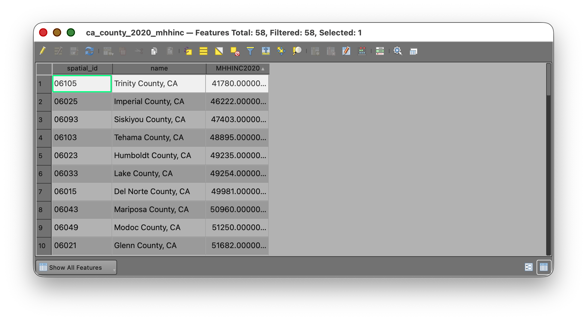
- Open the
ca_county_2020_mhhincattribute table. - Locate the
MHHINC2020field. - Click on the Field Header to Sort the field in ascending order so the smallest value appears first.
- Select the row with the lowest
MHHINC2020value. - Use the Zoom map to selected rows tool in the attribute table.
- Use the Deselect all features button to deselect your features, when you are done.
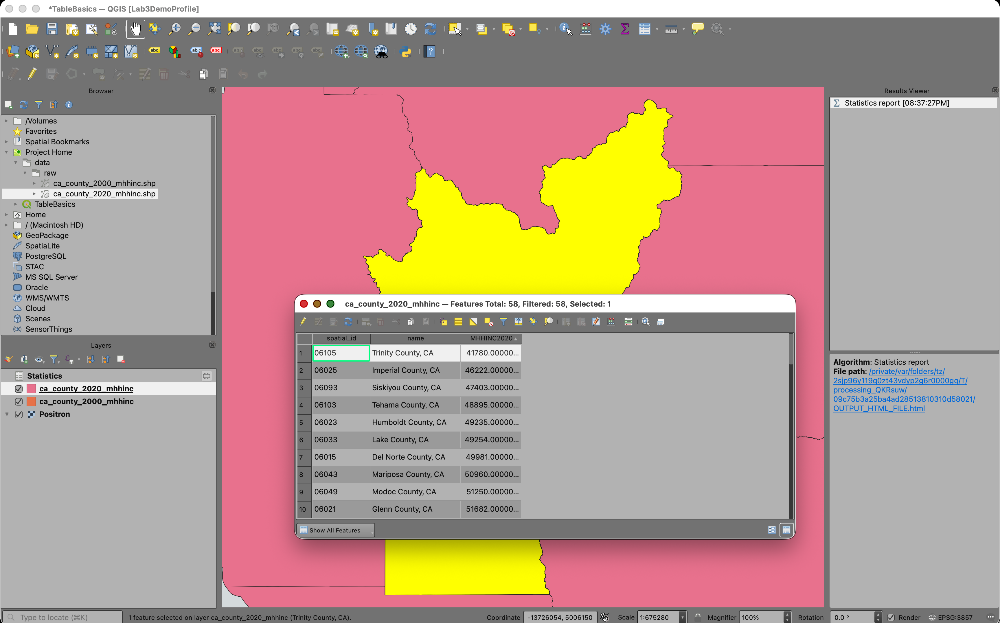
Find the lowest value in the 2000 layer
- Open the
ca_county_2000_mhhincattribute table. - Locate the
MHHINC2000field. - Sort the field in ascending order.
- Select the row with the lowest
MHHINC2000value. - Use the Zoom map to selected rows tool again.
- Use the Deselect all features button to deselect your features, when you are done.
Reflect on what you see
The county with the lowest value in 2000 may not be the same county as the one with the lowest value in 2020. That is one reason it is useful to bring both years into one joined layer and calculate change directly. Once both values are in the same table, you can compare them row by row rather than trying to mentally compare two separate layers.
Part 5: Join the 2000 Table to the 2020 Layer
In this lab, you will use the ca_county_2020_mhhinc layer as the target layer and join the 2000 table to it.
That means the geometry will remain the counties from the 2020 layer, but the table will temporarily gain fields from the 2000 layer.
- Right-click
ca_county_2020_mhhinc. - Choose Properties.
- Click the Joins tab.
- Click the Add Join button.
- Set the Join layer to
ca_county_2000_mhhinc. - Set the Join field to
spatial_id. - Set the Target field to
spatial_id. - Check the option to use a
Custom field name prefixand set it to the value2000_
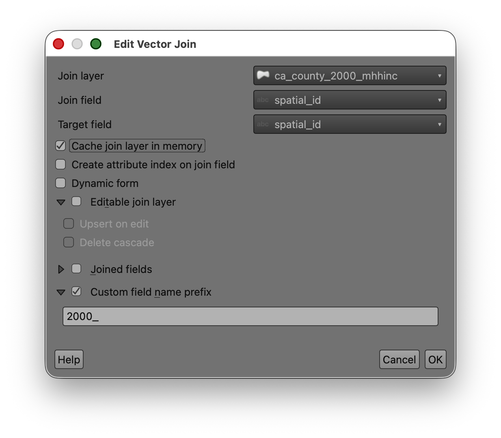
- Click OK.
- Click OK again to close Layer Properties.
Concept note
Although both inputs are shapefiles, the join is still a table operation.
QGIS compares the values in the target layer's spatial_id field to the values in the join layer's spatial_id field. Wherever they match, it temporarily appends the joined attributes.
Verify the join
- Open the attribute table for
ca_county_2020_mhhinc. - Scroll to the right.
- Confirm that you can now see the joined 2000 fields, including
MHHINC2000.
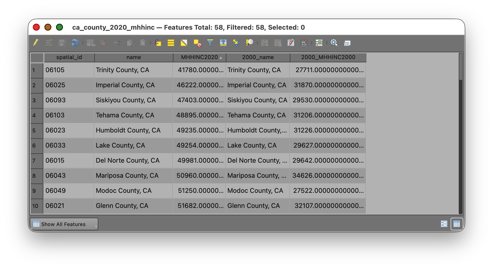
At this point, one table should contain:
Part 6: Calculate Absolute Change
Now that both year values are in the same table, you can calculate the difference.
- Open the attribute table for
ca_county_2020_mhhinc. - Open the Field Calculator.
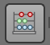
- Choose Create a new field.
- Name the field
mhhinc_diff. - Set the output field type to Decimal number(real).
- Use an output field length and precision that can hold the results, such as length
20and precision2. - Enter this expression:
"MHHINC2020" - "MHHINC2000"
- Check the preview.
- Click OK.
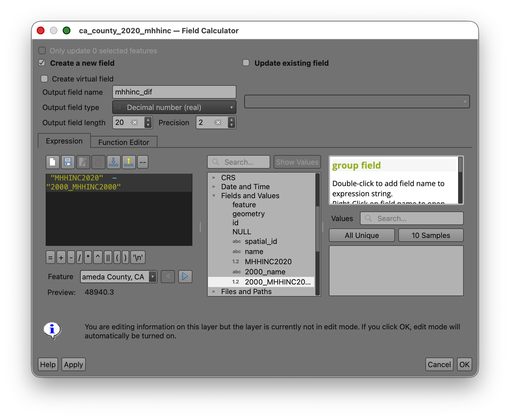
What this means
This calculation subtracts the 2000 median household income from the 2020 median household income for each county.
- Positive values mean income increased.
- Negative values mean income decreased.
- Values near zero mean very little change.
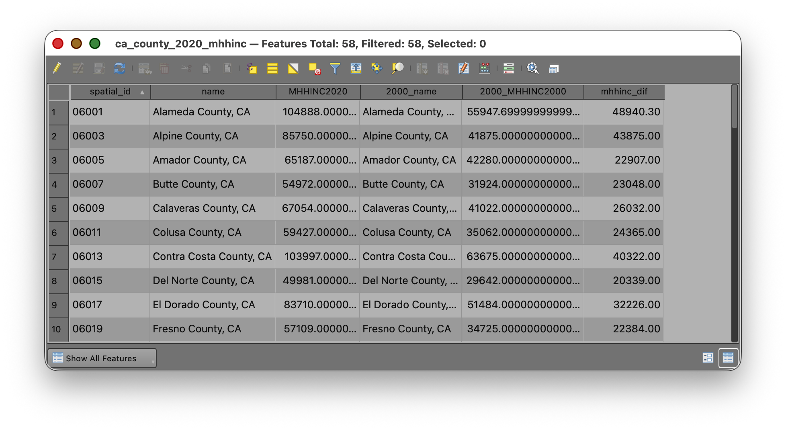
Part 7: Calculate Percent Change
Absolute change is useful, but percent change often tells a clearer story because it scales the change relative to the starting value.
- Open the Field Calculator again.
- Choose Create a new field.
- Name the field
pct_change. - Set the output field type to Decimal (double).
- Use a reasonable length and precision, such as length
20and precision2. - In the Field Calculator window, look for the list of available items in the middle panel.
- Open the Fields and Values section if needed.
- Find
MHHINC2020and double-click it to place the field name into the Expression window, instead of typing it by hand. - Repeat the same process for
MHHINC2000. - Add the operators and parentheses needed to build this expression:
(("MHHINC2020" - "MHHINC2000") / "MHHINC2000") * 100
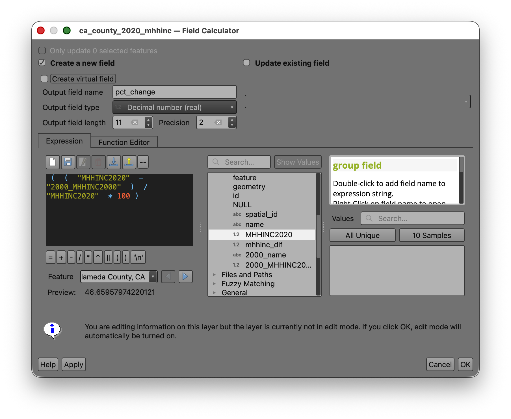
- Check the preview.
- Click OK.
- Save your edits.
- Toggle editing off.
Why double-click fields from the panel? This helps you avoid spelling mistakes, missing underscores, or accidentally typing the wrong capitalization. Letting QGIS insert the field names for you is safer than typing them manually.
Part 8: Map the Change
Now create a choropleth map from pct_change, because it allows comparison across counties with different starting values.
- Open the Layer Styling panel for
ca_county_2020_mhhinc. - Change the symbology from Single Symbol to Graduated.
- Set the Value field to
pct_change. - Choose a color ramp that makes change easy to interpret.
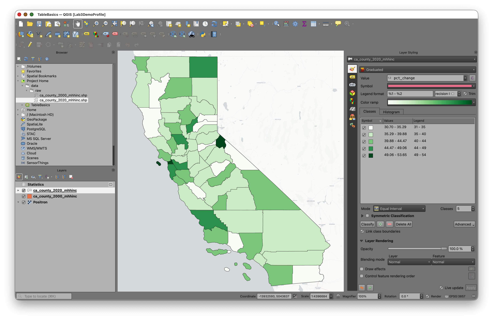
Note: If your data include both positive and negative values, a diverging ramp is often appropriate because it visually separates decreases from increases.
Return to John Nelson's essay: Telling Truth with Choropleth Maps and review his recommendations for selecting classification methods.
- Experiment with classification methods such as:
- Quantile
- Natural Breaks (Jenks)
- Equal Interval
- Try several class counts, such as
5,6, or7. - Compare how the mapped pattern changes.
Classification reflection
There is no universally correct classification for every choropleth map. Different methods emphasize different aspects of the distribution.
As you test classifications, ask:
- Does this map exaggerate differences?
- Does it hide important variation?
- Are the class breaks understandable?
- Does the map help a reader see a meaningful pattern?
This is the central design question in choropleth mapping.
To Turn In
Create a map layout showing county-level change in median household income in California.
Your map should include the necessary elements, such as Title, Legend, Author Name, Date, CRS, Scale, etc...
Export to PDF and submit on Canvas.